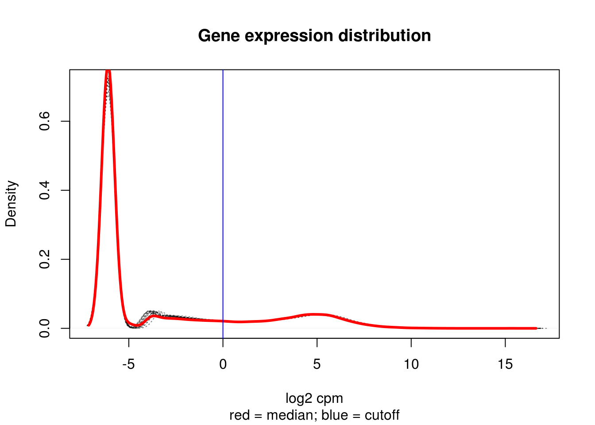

Normalization and filtering of bulkRNA Count data
Anthony Hung
2019-12-16
Last updated: 2020-01-03
Checks: 7 0
Knit directory: OAStrain/
This reproducible R Markdown analysis was created with workflowr (version 1.5.0). The Checks tab describes the reproducibility checks that were applied when the results were created. The Past versions tab lists the development history.
Great! Since the R Markdown file has been committed to the Git repository, you know the exact version of the code that produced these results.
Great job! The global environment was empty. Objects defined in the global environment can affect the analysis in your R Markdown file in unknown ways. For reproduciblity it’s best to always run the code in an empty environment.
The command set.seed(20191127) was run prior to running the code in the R Markdown file. Setting a seed ensures that any results that rely on randomness, e.g. subsampling or permutations, are reproducible.
Great job! Recording the operating system, R version, and package versions is critical for reproducibility.
Nice! There were no cached chunks for this analysis, so you can be confident that you successfully produced the results during this run.
Great job! Using relative paths to the files within your workflowr project makes it easier to run your code on other machines.
Great! You are using Git for version control. Tracking code development and connecting the code version to the results is critical for reproducibility. The version displayed above was the version of the Git repository at the time these results were generated.
Note that you need to be careful to ensure that all relevant files for the analysis have been committed to Git prior to generating the results (you can use wflow_publish or wflow_git_commit). workflowr only checks the R Markdown file, but you know if there are other scripts or data files that it depends on. Below is the status of the Git repository when the results were generated:
Ignored files:
Ignored: .Rhistory
Ignored: .Rproj.user/
Ignored: data/filtered_counts.rds
Ignored: data/norm_filtered_counts.rds
Ignored: data/raw_counts_relabeled.rds
Unstaged changes:
Modified: analysis/raw_counts_analysis.Rmd
Modified: analysis/technical_factors_analysis.Rmd
Modified: data/Sample.info.RNAseq.reordered.csv
Note that any generated files, e.g. HTML, png, CSS, etc., are not included in this status report because it is ok for generated content to have uncommitted changes.
These are the previous versions of the R Markdown and HTML files. If you’ve configured a remote Git repository (see ?wflow_git_remote), click on the hyperlinks in the table below to view them.
| File | Version | Author | Date | Message |
|---|---|---|---|---|
| html | 11d20cf | Anthony Hung | 2019-12-17 | Build site. |
| Rmd | a5c9482 | Anthony Hung | 2019-12-16 | run through with dummy data |
| html | a5c9482 | Anthony Hung | 2019-12-16 | run through with dummy data |
| Rmd | bb98d14 | Anthony Hung | 2019-12-16 | Add sampleinfo file |
| Rmd | c1f7cf7 | Anthony Hung | 2019-12-16 | Start up additional analysis files |
| Rmd | a8cef1a | Anthony Hung | 2019-12-16 | Create analysis files for analysis of BulkRNA pilot data |
Perform cpm normalization of raw count data and filtering of lowly expressed genes
#configuration
proj_dir <- "/project2/gilad/anthonyhung/Projects/OAStrain_project/"
sample_file_info <- "data/bulkPilot_Sample_info_RNAseq.csv"library("gplots")
Attaching package: 'gplots'The following object is masked from 'package:stats':
lowesslibrary("ggplot2")
library("reshape")
library("edgeR")Loading required package: limmalibrary("RColorBrewer")
library("scales")
library("cowplot")
Attaching package: 'cowplot'The following object is masked from 'package:ggplot2':
ggsavelibrary("dplyr")
Attaching package: 'dplyr'The following object is masked from 'package:reshape':
renameThe following objects are masked from 'package:stats':
filter, lagThe following objects are masked from 'package:base':
intersect, setdiff, setequal, union# Load colors
colors <- colorRampPalette(c(brewer.pal(9, "Blues")[1],brewer.pal(9, "Blues")[9]))(100)
pal <- c(brewer.pal(9, "Set1"), brewer.pal(8, "Set2"), brewer.pal(12, "Set3"))
# load in relabeled counts
raw_counts <- readRDS("data/raw_counts_relabeled.rds")
# load in reordered sample information
sampleinfo <- readRDS("data/Sample.info.RNAseq.reordered.csv")Perform cpm normalization on all counts and plot density plots
cpm <- cpm(raw_counts, log=TRUE)
head(cpm) 18855_1_S 18856_1_S 19160_2_U 18855_2_U 18856_2_U 19160_1_S
ENSG00000223972 5.202337 5.202337 5.202337 5.202337 5.202337 5.202337
ENSG00000227232 5.202337 5.202337 5.202337 5.202337 5.202337 5.202337
ENSG00000278267 5.202337 5.202337 5.202337 5.202337 5.202337 5.202337
ENSG00000243485 5.202337 5.202337 5.202337 5.202337 5.202337 5.202337
ENSG00000284332 5.202337 5.202337 5.202337 5.202337 5.202337 5.202337
ENSG00000237613 5.202337 5.202337 5.202337 5.202337 5.202337 5.202337
18855_3_S 18856_3_S 19160_3_S 18855_1_U 18856_1_U 19160_1_U
ENSG00000223972 5.202337 5.202337 5.202337 5.202337 5.202337 5.202337
ENSG00000227232 5.202337 5.202337 5.202337 5.202337 5.202337 5.202337
ENSG00000278267 5.202337 5.202337 5.202337 5.202337 5.202337 5.202337
ENSG00000243485 5.202337 5.202337 5.202337 5.202337 5.202337 5.202337
ENSG00000284332 5.202337 5.202337 5.202337 5.202337 5.202337 5.202337
ENSG00000237613 5.202337 5.202337 5.202337 5.202337 5.202337 5.202337
18855_3_U 18856_3_U 19160_3_U 18855_2_S 18856_2_S 19160_2_S
ENSG00000223972 5.202337 5.202337 5.202337 5.202337 5.202337 5.202337
ENSG00000227232 5.202337 5.202337 5.202337 5.202337 5.202337 5.202337
ENSG00000278267 5.202337 5.202337 5.202337 5.202337 5.202337 5.202337
ENSG00000243485 5.202337 5.202337 5.202337 5.202337 5.202337 5.202337
ENSG00000284332 5.202337 5.202337 5.202337 5.202337 5.202337 5.202337
ENSG00000237613 5.202337 5.202337 5.202337 5.202337 5.202337 5.202337strained <- sampleinfo$treatment == "Strain"
unstrained <- sampleinfo$treatment == "Unstrain"
ind_1 <- sampleinfo$Individual == "NA18855 "
ind_2 <- sampleinfo$Individual == "NA18856 "
ind_3 <- sampleinfo$Individual == "NA19160 "
# Look at density plots for all individuals broken down by each treatment type
col = as.data.frame(pal[as.numeric(sampleinfo$Individual)])
plotDensities(cpm[,strained], col=col[strained, ], legend="topright")
| Version | Author | Date |
|---|---|---|
| a5c9482 | Anthony Hung | 2019-12-16 |
plotDensities(cpm[,unstrained], col=col[unstrained, ], legend="topright")
| Version | Author | Date |
|---|---|---|
| a5c9482 | Anthony Hung | 2019-12-16 |
# Look at density plots broken down by individual
col = as.data.frame(pal[as.numeric(sampleinfo$treatment)])
plotDensities(cpm[,ind_1], col=col[ind_1, ], legend="topright")
| Version | Author | Date |
|---|---|---|
| a5c9482 | Anthony Hung | 2019-12-16 |
plotDensities(cpm[,ind_2], col=col[ind_2, ], legend="topright")
| Version | Author | Date |
|---|---|---|
| a5c9482 | Anthony Hung | 2019-12-16 |
plotDensities(cpm[,ind_3], col=col[ind_3, ], legend="topright")
| Version | Author | Date |
|---|---|---|
| a5c9482 | Anthony Hung | 2019-12-16 |
Boxplots of cpm across samples
meltcpm <- melt(cpm)
names(meltcpm) <- c("gene", "sampleID", "cpm")
p <- ggplot(meltcpm, aes(factor(sampleID), cpm))
p + geom_boxplot() + theme(axis.text.x = element_text(angle = 90))
| Version | Author | Date |
|---|---|---|
| a5c9482 | Anthony Hung | 2019-12-16 |
Filtering for lowly expressed genes (avg CPM > 0.5 in at least 2 samples)
cutoff <- 0
#plot densities to determine cutoff
cpm_median <- apply(cpm, 1, median)
cpm_median_density <- density(cpm_median)
cpm_density <- apply(cpm, 2, density)
plot(cpm_density[[1]], lty = "dotted", col = gray(0.05, alpha = 0.5),
main = "Gene expression distribution",
xlab = "log2 cpm", sub = "red = median; blue = cutoff")
suppress_output <- lapply(cpm_density, lines, lty = "dotted",
col = gray(0.05, alpha = 0.5))
lines(cpm_median_density, col = "red", lwd = 3)
abline(v = cutoff, col = "blue")
| Version | Author | Date |
|---|---|---|
| a5c9482 | Anthony Hung | 2019-12-16 |
#apply filter (Keeping the `r sum(cpm_median > cutoff)` genes with a median log~2~ cpm greater than `r cutoff`.)
counts <- raw_counts %>%
filter(cpm_median > cutoff)
rownames(counts) <- rownames(raw_counts)[cpm_median > cutoff]
filtered_cpm <- cpm(counts, log = T)Boxplots of normalized+filtered counts across samples
melt_filt_cpm <- melt(filtered_cpm)
names(melt_filt_cpm) <- c("gene", "sampleID", "cpm")
p1 <- ggplot(melt_filt_cpm, aes(factor(sampleID), cpm))
p1 + geom_boxplot() + theme(axis.text.x = element_text(angle = 90))
| Version | Author | Date |
|---|---|---|
| a5c9482 | Anthony Hung | 2019-12-16 |
Save normalized/filtered count matrix and filtered count matrix
saveRDS(counts, "data/filtered_counts.rds")
saveRDS(filtered_cpm, "data/norm_filtered_counts.rds")
sessionInfo()R version 3.4.3 (2017-11-30)
Platform: x86_64-pc-linux-gnu (64-bit)
Running under: Scientific Linux 7.4 (Nitrogen)
Matrix products: default
BLAS/LAPACK: /software/openblas-0.2.19-el7-x86_64/lib/libopenblas_haswellp-r0.2.19.so
locale:
[1] LC_CTYPE=en_US.UTF-8 LC_NUMERIC=C
[3] LC_TIME=en_US.UTF-8 LC_COLLATE=en_US.UTF-8
[5] LC_MONETARY=en_US.UTF-8 LC_MESSAGES=en_US.UTF-8
[7] LC_PAPER=en_US.UTF-8 LC_NAME=C
[9] LC_ADDRESS=C LC_TELEPHONE=C
[11] LC_MEASUREMENT=en_US.UTF-8 LC_IDENTIFICATION=C
attached base packages:
[1] stats graphics grDevices utils datasets methods base
other attached packages:
[1] dplyr_0.8.3 cowplot_0.9.3 scales_1.1.0 RColorBrewer_1.1-2
[5] edgeR_3.20.9 limma_3.34.9 reshape_0.8.8 ggplot2_3.2.1
[9] gplots_3.0.1.1
loaded via a namespace (and not attached):
[1] Rcpp_1.0.3 plyr_1.8.4 compiler_3.4.3 pillar_1.4.2
[5] later_1.0.0 git2r_0.26.1 workflowr_1.5.0 bitops_1.0-6
[9] tools_3.4.3 digest_0.6.23 lattice_0.20-35 evaluate_0.14
[13] lifecycle_0.1.0 tibble_2.1.3 gtable_0.3.0 pkgconfig_2.0.3
[17] rlang_0.4.2 yaml_2.2.0 xfun_0.11 withr_2.1.2
[21] stringr_1.4.0 knitr_1.26 fs_1.3.1 gtools_3.8.1
[25] caTools_1.17.1.3 locfit_1.5-9.1 tidyselect_0.2.5 rprojroot_1.3-2
[29] grid_3.4.3 glue_1.3.1 R6_2.4.1 rmarkdown_1.18
[33] gdata_2.18.0 farver_2.0.1 purrr_0.3.3 magrittr_1.5
[37] whisker_0.4 backports_1.1.5 promises_1.1.0 htmltools_0.4.0
[41] assertthat_0.2.1 colorspace_1.4-1 httpuv_1.5.2 labeling_0.3
[45] KernSmooth_2.23-15 stringi_1.4.3 lazyeval_0.2.2 munsell_0.5.0
[49] crayon_1.3.4